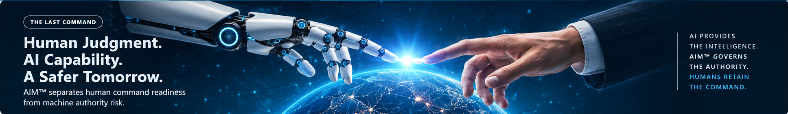

LEVEL 1
AIM-CP™
AIM™ Certified Practitioner
Foundation certification for professionals who assess and govern AI authority using AIM™.
10 Modules10 Questions / Module80% Passing

Every consequential agent should have an accountable owner, defined purpose, measured authority, and verified revocation path.
| Agent | Owner | Purpose | AAI | Last Command | Status |
|---|
Score the AI across the 11 AIM™ authority dimensions, then calculate the AIM™ Autonomy Index. AAI is a comparison index, not deployment permission.
Dx identifies the agent's authority exposure. Rx explains what is driving that exposure and prescribes specific changes to reduce it.
—
What AIM™ Dx is telling us about this agent.
Rx identifies the authority concentrations that matter most and explains why.
Specific governance and architecture changes AIM™ recommends for this agent.
Translate the prescription into changes the product, engineering, security, and business teams can implement.
Rx recommends how consequential actions should be classified after remediation.
Implement the prescribed changes, then return to AIM™ Dx and score the agent based on its new actual authority. Rx does not subtract points from the current AAI. A lower AAI must come from a real reduction in authority, reach, velocity, consequence, or human-control deficit.
There are no additional assessment questions in Rx. Complete Dx, then Rx automatically generates the evaluation and prescription.
AAI = 100 × Σ(scores) / 55
In plain English, AIM™ Dx scores the agent across 11 authority dimensions. Each dimension receives a score from 1 to 5. We add those 11 scores together. The highest possible total is 55 because 11 × 5 = 55.
We then divide the agent's total by 55 and multiply by 100. That simply converts the result into an easy-to-read 0–100 comparison scale.
Important: AAI is not a safety grade and it does not mean “60% dangerous.” It is a structured measure of how much autonomy and authority are concentrated in the agent. AIM™ Rx then explains what is driving that exposure and what should be changed.
AIM-CP™ teaches practitioners to assess AI authority, interpret AAI, prescribe controls, classify A/G/H/X boundaries, and preserve the human Last Command.
Foundation certification for professionals who assess and govern AI authority using AIM™.
Advanced certification for designing bounded authority and enforceable AI control planes.
Executive certification for governing enterprise AI workforces and human-reserved powers.
Demonstrate that you can govern AI authority in practice. AIM-CP™ combines formal learning, command practice, a randomized final examination, a practical AIM™ Dx/Rx case, and a Commander Check Ride.
Each attempt draws five questions from each Command Module and scrambles the answer order. Failed attempts do not reveal correct answers.
You are the AIM™ practitioner for AP-AI-01, an accounts-payable agent operating across ERP, AP workflow, and bank-connected payment services. Diagnose the authority that exists, then prescribe the governance architecture.
The agent can validate invoices, recommend approvals, initiate approved payment workflows, access vendor and payment data, and execute through connected production tools. It cannot independently change vendor banking data. High-value exceptions require human approval. Execution is fast and operates at enterprise scale.
A five-stage executive crisis tests whether you preserve human command when urgency, delegation, drift, and apparent business value all push toward greater machine authority.
Complete the candidate profile now. The AIM-CP™ credential becomes issuable only after all five certification requirements are complete.
Complete all five AIM-CP™ requirements to issue the certificate and digital badge.
Enter a Certification ID issued by this training build. Production verification will move to the AIM™ Command Center server/database when deployed online.
Your earned credential, certificate, and verification information.
This build introduces the account and data architecture for the hosted AIM™ Command Center. Local mode remains available for prototype operation; production authentication and persistence are explicitly marked until a backend is connected.
Users, enrollment, credentials, reporting, status controls.
Learner progress, assessments, practical review, Check Ride oversight.
Assigned training, assessments, progress, earned credentials.
Manage enrollment, training progress, assessment records, and AIM-CP™ credentials from one administrative workspace.
Register and enroll candidates in AIM-CP™.
| Student | Organization | Enrollment | Status | Progress |
|---|
Module, simulator, exam, practical, and Check Ride status.
Review issued AIM-CP™ credentials and manage their administrative status.
| Certification ID | Candidate | Issued | Status | Action |
|---|
Plain-English explanations available from anywhere in the portal.